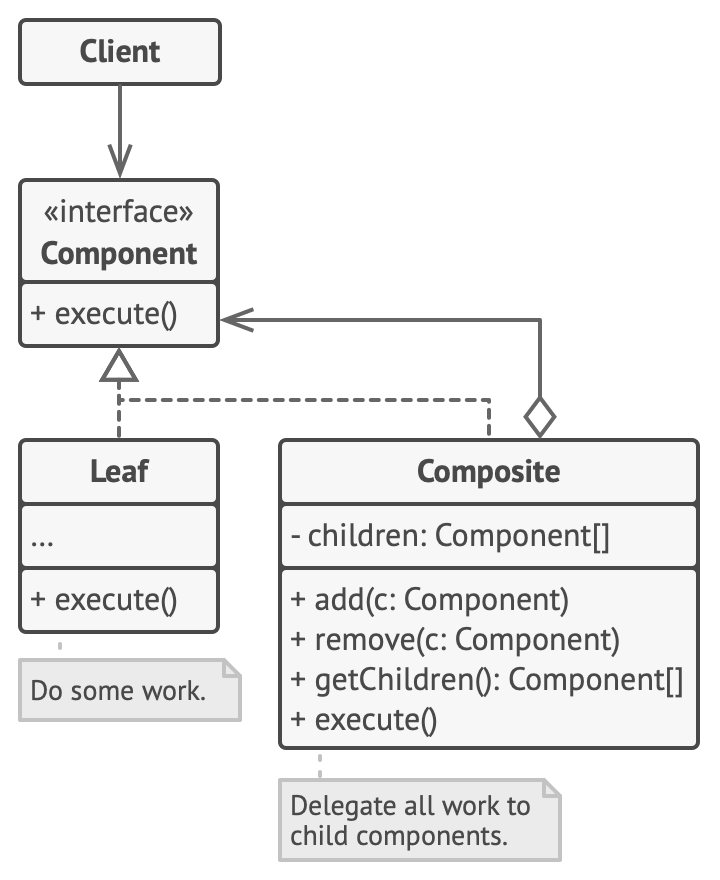

TIC 409 Advanced OOP
Session 2 : Structural patterns
🎄 Decorator pattern (aka. Wrapper)
Intent
Attach additional responsibilities to an object (not a class) dynamically. Decorators provide a flexible alternative to subclassing for extending functionality.
Diagram

Example
You are creating you sci-fi game. In your game, you can own a spaceship. Your spaceship has a basic gun and a basic shield. You can customize your spaceship by attaching addons to it. In our example your will be able to attach Laser gun to improve your attack. You can also equip a Point-defense cannon to improve your defense.
We don't care about how much those addons will impact your attack and defense we will be focusing on ensuring they are activated at the correct time if they are attached to your spaceship. Also a spaceship may have any combination of the above equipments.Questions
- Start by copying the start code and reading it. What do you think about the code structure ?
- Let's assume we wanted to add a new Attack weapon. How hard will it be ? Why ?
- Start by implementing the decorator pattern to improve the code structure. [code]
- How hard would it be to create a `downgrade` method that detaches the last attachment ?
- Is there any other method way to create the same functionality using a different approach ? Will it remain as flexible the builder pattern ?
🪆 Composite pattern (aka. Object tree)
Intent
Compose objects into tree structures to represent part-whole hierarchies. Composite lets clients treat individual objects and compositions of objects uniformly.
Diagram
Example
You are creating an RPG (Role-playing game). In your game, your character carries a bag in which he can put the weapons he finds while hunting. The player's movement is affected by the weight of the weapons he's carrying, so it is important to know the total weight of the bag he's carrying. A bag can carry a maximum of 5 items. However, a player can extend the number of items he can carry by adding a new bag to his bag and thus increase the maximum amount of items he can carry.
Questions
- Start by copying the start code and reading it. What do you think about the code structure ?
- Improve the code structure and remove duplication by implementing the composite pattern. [code]
- How would you prevent someone from unintentionally using addCariable() on an item (ex. sword1.addCarriable(sword2)) ? [code]
- How would you implement the method item.drop() to remove an item from its bag ? [code]
- Does this exercice remind you of an exercise we did in last year's OOP course ?
- [Caching variation] How would you go about using caching in container objects to avoid recalculating the weights each time?